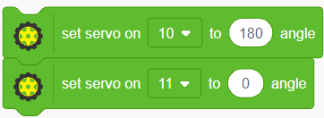
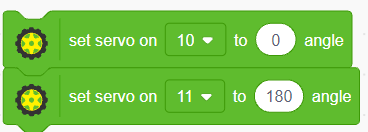
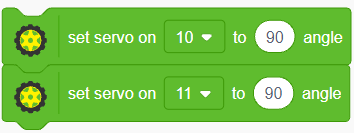

Control del movimiento de PonchoBot
1. Bloque para el control de los servos
Cada rueda de PonchoBot es controlada por un servo de giro continuo: el derecho (D) y el izquierdo (I). Pictoblox contine los bloques específicos para su control (los mismos que para servos de medio giro, ya vistos en el proyecto de radar), facilitando la programación del movimiento de los mismos:
Debemos tener en cuenta los pines de Arduino Nano en el cual está conectado el cable de señal de cada servo. En PonchoBot tenemos:
- pin digital D11 para el motor D.
- pin digital D10 para el motor I.
2. Valores para manejar los servos
Al estar los servos dispuestos en forma invertida (uno apunta para adelante y el otro para atrás), debemos invertir sus giros para que ambas ruedas den vueltas en un mismo sentido.
- Los ángulos para hacer girar al servo continuamente son 0 y 180. Un ángulo de 90 detiene al servo.
- Para que PonchoBot avance:

- Para que PonchoBot retroceda:

- Para que PonchoBot se detenga:

Nota: ya vimos lo sencillo que es hacer funcionar los servos de giro continuo. También es posible regular su velocidad, con valores intermedios entre 0 y 90 para el giro en un sentido, siendo 0 la máxima velocidad y 89 la mínima. Lo mismo para el giro en sentido contrario, 180 la máxima velocidad y 91 la mínima.